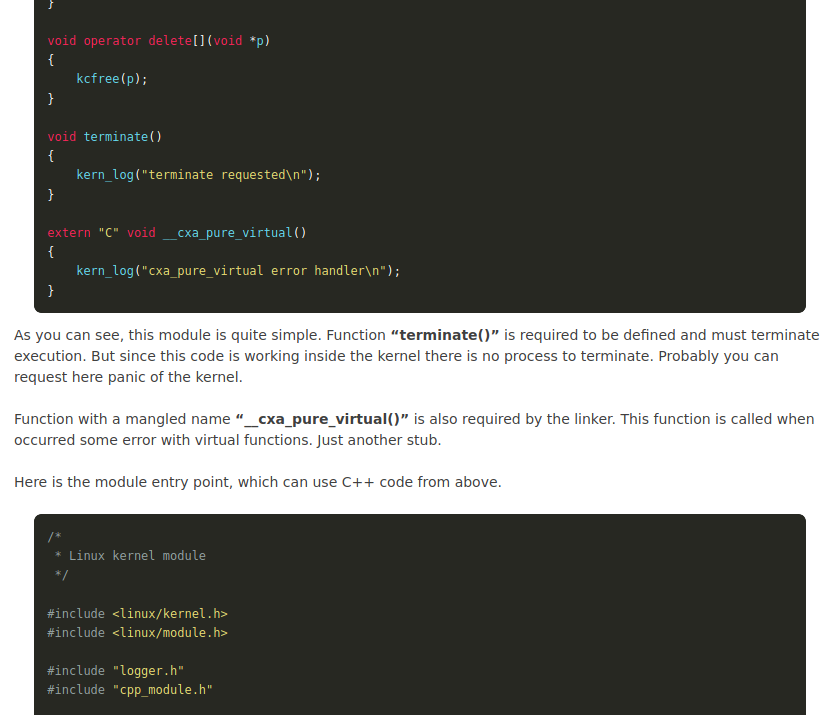

Linux kernel is written in C (and in Assembly in platform-specific portions) language. C language is the only language allowed to write kernel modules. And there is no problem in most cases.
But sometimes, some stranger things may be required. Let’s see how to use C++ for the Linux kernel modules.
Of course, it’s not a common situation. But imagine that you have some big code with some logic and algorithms implementations, and you need to reuse this code inside the Linux kernel, which is written in C++…
There are two options: completely rewrite this code to C language or somehow use it as is. This article can help those brave hearts who chose the second option.
I have to say that it’s impossible to write a pure C++ kernel module. You still need many C routines and interlayers to communicate with the kernel and use resources. But all this is possible because C++ is basically based on C and can link with C functions and structures.
C code can also use C++ methods if it’s not classes or something C++-specific.
Actually, when talking about C++, it’s very important to understand that language functionality is very limited. Standard libraries, like libstdc++ with all containers, are not available. Exceptions and RTTI also can’t be used because of overhead and required resources to add support of these features.
Since the standard library is unavailable, we need to implement some basic runtime functionality like ‘new‘ and ‘delete‘ functions, virtual functions support, and everything that can cause linker errors. It might be sounds not so easy, but actually, everything is quite simple.
Support C++ runtime required two components. I called these components “CPP support” and “kernel library“.
The first component, “CPP support,” implements C++-specific things like memory allocators and so on.
The second component, “kernel library” is a lightweight implementation of the standard library with low-level functions. Still, actually, this is only a “bridge” between C “library” (in-kernel implementation) and the C++ world.
C and C++ are working together.
When talking about this “bridge” it’s very important to know that it’s impossible to mix C and C++ code without a little trick directly.
There is a difference in function name mangling in C and C++ compilers. In the C++ world, a function can be overloaded, so the compiler adds some special information about specific function prototypes. This code can’t be linked by C code and vice versa. That’s why we can’t directly include C headers in the C++ file.
To solve this problem, there is a little instruction to the C++ compiler called ‘extern “C”‘. These instructions disable C++-specific name mangling and allow mixing of the code.
C-style code must be wrapped with ‘extern “C”‘ for the C++ compiler. For the C compiler, such wrapping is not required. C++ compilers define preprocessor variable “__cplusplus” that can be used with function wrappers.
Here is what it looks like:
#ifdef __cplusplus
extern "C" {
#endif
void foo_c_style_function();
void bar_c_style_function();
#ifdef __cplusplus
}
#endif
The great thing here is that this function’s actual implementation can be in a C or C++ file. In a C++ world, both functions can use classes and other C++-specific code and still can be called from the C world.
{kind=link}
When talking about Linux kernel modules, some tricks are also required in Makefile. It will be discussed below.
Now all together.
What is required to support and run C++ code in the Linux kernel?
{kind=link}
Demo implementation of the kernel module with C++ components
Let’s begin our implementation with the simple logger that can provide printk functionality for the C++ module.
Header and implementation files.
/*
* Linux kernel logger for C and C++
*/
#ifndef LOGGER_H
#define LOGGER_H
#ifdef __cplusplus
extern "C" {
#endif
void kern_log(const char* fmt, ...);
#ifdef __cplusplus
}
#endif
#endif
/*
* Linux kernel logger for C and C++
*/
#include <linux/kernel.h>
#include "logger.h"
void kern_log(const char* fmt, ...)
{
va_list args;
va_start(args, fmt);
vprintk(fmt, args);
va_end(args);
}
Now we can use the kern_log function in the C and C++ code.
Declaration of the example C++ module with few classes. Implementation, cpp_module.cpp:
/*
* C++ component inside the Linux kernel
*/
#include <linux/kernel.h>
#include <linux/module.h>
#include "cpp_module.h"
#include "logger.h"
/* Also needed to define NULL as simple 0. It's Ok by standard. */
#define NULL 0
class foo {
public:
foo()
: a(0)
{
kern_log("C++ class constructor\n");
}
virtual ~foo()
{
kern_log("C++ class destructor\n");
}
/* "Normal" virtual function */
virtual void set_data(int data)
{
kern_log("Don't call me!\n");
};
/* Pure virtual function */
virtual int get_data() =0;
protected:
int a;
};
/* Class bar is inheritor of the class foo
* Overloading implementation of the class methods
*/
class bar: foo {
public:
/* Virtual destructor is required */
~bar()
{
}
void set_data(int data)
{
kern_log(">> set_data %d\n", data);
a = data;
}
int get_data()
{
return a;
}
};
static bar *bar_instance = NULL;
/* This functions can be called from the C code */
void init_cpp_subsystem_example(void)
{
kern_log("Init C++ subsystem\n");
bar_instance = new bar;
if (!bar_instance) {
kern_log("Failed to allocate bar class\n");
return;
}
bar_instance->set_data(42);
kern_log("Getting data from bar: %d\n", bar_instance->get_data());
}
void release_cpp_subsystem_example(void)
{
kern_log("Release C++ subsystem\n");
if (bar_instance) {
delete bar_instance;
}
}
And the header, cpp_module.h:
/*
*/
#ifndef CPP_MODULE_H
#define CPP_MODULE_H
#ifdef __cplusplus
extern "C" {
#endif
void init_cpp_subsystem_example(void);
void release_cpp_subsystem_example(void);
#ifdef __cplusplus
}
#endif
#endif
Very basic kernel library module to support C++ code.
/*
* Kernel lib - support basic C++ runtime functions
*/
#ifndef KERN_LIB_H
#define KERN_LIB_H
#ifdef __cplusplus
#include <cstdarg>
extern "C" {
#else
#include <stdarg.h>
#endif
void kmemset(void *dst, int c, unsigned int len);
void *kcmemcpy(void *dst, void *src, unsigned int len);
void *kcmemmove(void *dst, void *src, unsigned int len);
int kcmemcmp(void *p1, void *p2, unsigned int len);
void *kcmalloc(unsigned int size);
void *kcrealloc(void *mem, unsigned int size);
void kcfree(void *mem);
#ifdef __cplusplus
}
#endif
#endif
/*
* Kernel lib - support basic C++ runtime functions
*/
#include <linux/kernel.h>
#include <linux/slab.h>
#include <linux/string.h>
#include "kern_lib.h"
void kcmemset(void *dst, int c, unsigned int len)
{
memset(dst, c, len);
}
void *kcmemcpy(void *dst, void *src, unsigned int len)
{
memcpy(dst, src, len);
return dst;
}
void *kcmemmove(void *dst, void *src, unsigned int len)
{
memmove(dst, src, len);
return dst;
}
int kcmemcmp(void *p1, void *p2, unsigned int len)
{
return memcmp(p1, p2, len);
}
void *kcmalloc(unsigned int size)
{
return kmalloc(size, GFP_ATOMIC);
}
void *kcrealloc(void *mem, unsigned int size)
{
return krealloc(mem, size, GFP_ATOMIC);
}
void kcfree(void *mem)
{
kfree(mem);
}
And the last C++ component is “CPP support” module. There is no header file. This code is only required by the linker and should be present in the object file.
/*
* Kernel C++ support
*/
#include <cstddef>
#include "kern_lib.h"
#include "logger.h"
void *operator new(size_t sz) throw ()
{
return kcmalloc(sz);
}
void *operator new[](size_t sz) throw ()
{
return kcmalloc(sz);
}
void operator delete(void *p)
{
kcfree(p);
}
void operator delete[](void *p)
{
kcfree(p);
}
void terminate()
{
kern_log("terminate requested\n");
}
extern "C" void __cxa_pure_virtual()
{
kern_log("cxa_pure_virtual error handler\n");
}
As you can see, this module is quite simple. The function “terminate()” must be defined and must terminate execution. But since this code is working inside the kernel, there is no process to terminate. You can probably request here panic of the kernel.
Function with a mangled name “__cxa_pure_virtual()” is also required by the linker. This function is called when occurred some error with virtual functions. Just another stub.
Here is the module entry point, which can use the C++ code from above.
/*
* Linux kernel module
*/
#include <linux/kernel.h>
#include <linux/module.h>
#include "logger.h"
#include "cpp_module.h"
static int __init module_load(void)
{
kern_log("Loading C++ kernel module\n");
init_cpp_subsystem_example();
return 0;
}
static void __exit module_unload(void)
{
kern_log("Unloading C++ kernel module\n");
release_cpp_subsystem_example();
}
module_init(module_load);
module_exit(module_unload);
MODULE_DESCRIPTION ("Linux kernel module with C++");
MODULE_VERSION ("0.1");
MODULE_AUTHOR ("Oleg Kutkov");
MODULE_LICENSE ("GPL");
Now it’s time for the Makefile with some tricks.
We can declare CPP objects in a common list of all module objects.
OBJECTS := module.o \
kern_lib.o \
logger.o \
cpp_support.cpp.o \
cpp_module.cpp.o
But to be able to build these CPP objects, we need to define a special target for the CPP files:
cxx-prefix := " $(HOSTCXX) [M] "
%.cpp.o: %.cpp
@echo $(cxx-prefix)$@
@$(HOSTCXX) $(cxxflags) -c $< -o $@
This target defines to use g++ compiler for CPP files. You can also see some “cosmetics” that change the CPP’s output to be Kbuild-like.
For the proper compilation, it’s important to set some compiler flags.
cxxflags = $(FLAGS) \
-fno-builtin \
-nostdlib \
-fno-rtti \
-fno-exceptions \
-std=c++0x
FLAGS is a common flags set that can be derived from the CFLAGS.
-fno-builtin disables built-in compiler functions. Not all of the functions can be used inside the kernel.
-nostdlib disables usage of the standard C++ library
-fno-rtti disables RTTI support. This can help to reduce code size.
-fno-exceptions disable exceptions support.
-std=c++0x defines to use 0x C++ standard. You can try to use some other standard if required…
Also, it’s essential to provide KBUILD_CFLAGS for the C++ compiler. But not all flags are valid for the C++ compiler. To remove warnings, we can use sed magic:
cxx-selected-flags = $(shell echo $(KBUILD_CFLAGS) \
| sed s/-D\"KBUILD.\"//g \
| sed s/-Werror=strict-prototypes//g \
| sed s/-Werror=implicit-function-declaration//g \
| sed s/-Werror=implicit-int//g \
| sed s/-Wdeclaration-after-statement//g \
| sed s/-Wno-pointer-sign//g \
| sed s/-Werror=incompatible-pointer-types//g \
| sed s/-Werror=designated-init//g \
| sed s/-std=gnu90//g )
Append cxx-selected-flags to the cxxflags
Now all together, Makefile:
#
# Linux kernel C++ module makefile
# Oleg Kutkov, 2019
#
MOD_NAME := cpp_kernel
KERNEL := /lib/modules/$(shell uname -r)/build
FLAGS := -Wall
KMOD_DIR := $(shell pwd)
OBJECTS := module.o \
kern_lib.o \
logger.o \
cpp_support.cpp.o \
cpp_module.cpp.o
ccflags-y += $(FLAGS)
# Apply C flags to the cpp compiler and disable cpp features that can't be supported in the kernel module
cxx-selected-flags = $(shell echo $(KBUILD_CFLAGS) \
| sed s/-D\"KBUILD.\"//g \
| sed s/-Werror=strict-prototypes//g \
| sed s/-Werror=implicit-function-declaration//g \
| sed s/-Werror=implicit-int//g \
| sed s/-Wdeclaration-after-statement//g \
| sed s/-Wno-pointer-sign//g \
| sed s/-Werror=incompatible-pointer-types//g \
| sed s/-Werror=designated-init//g \
| sed s/-std=gnu90//g )
cxxflags = $(FLAGS) \
$(cxx-selected-flags) \
-fno-builtin \
-nostdlib \
-fno-rtti \
-fno-exceptions \
-std=c++0x
obj-m += $(MOD_NAME).o
$(MOD_NAME)-y := $(OBJECTS)
.PHONY: $(MOD_NAME).ko
$(MOD_NAME).ko:
@echo building module
make -C $(KERNEL) M=$(KMOD_DIR) modules
cxx-prefix := " $(HOSTCXX) [M] "
%.cpp.o: %.cpp
@echo $(cxx-prefix)$@
@$(HOSTCXX) $(cxxflags) -c $< -o $@
@echo -n > $$(dirname $@)/.$$(basename $@).cmd
.PHONY: clean
clean:
@echo clean
make -C $(KERNEL) M=$(KMOD_DIR) clean
Compilation and testing
$ make clean && make $ sudo insmod cpp_kernel.ko $ dmesg | tail -n10 [158142.977086] Loading C++ kernel module [158142.977088] Init C++ subsystem [158142.977089] C++ class constructor [158142.977091] >> set_data 42 [158142.977092] Getting data from bar: 42 [158144.422263] Unloading C++ kernel module [158144.422265] Release C++ subsystem [158144.422266] C++ class destructor
As you can see, everything is working properly. Destructors of the classes are handled as expected, with no linking errors or crashes.
I hope this material will be helpful to someone 🙂
Thanks for reading!
{{~foo()}} must be virtual. Maybe better to use C++11, then compiler would throw an error if keyword override has been used at {{~bar()}} override.
Black font on black background – your are a genius
I don’t have black fonts on black background.

Hello. Can you share details of what’s not working?
Hello,
Thanks for the tutorial, it’s super nice.
I followed your tutorial, I had at the end the list of the following files:
cpp_kernel.cpp
cpp_module.cpp
cpp_module.h
cpp_support.cpp
kern_lib.c
kern_lib.h
kern_log.c
logger.h
Makefile
When I run the command: “make clean && make”
I have the following error:
clean
make -C /lib/modules/5.10.0-16-amd64/build M=/home/mrzk/src/kernel_c_cpp clean
make[1]: enter the directory “/usr/src/linux-headers-5.10.0-16-amd64”
make[1]: leave the directory “/usr/src/linux-headers-5.10.0-16-amd64”
building-module
make -C /lib/modules/5.10.0-16-amd64/build M=/home/mrzk/src/kernel_c_cpp modules
make[1]: enter the directory “/usr/src/linux-headers-5.10.0-16-amd64”
make[3]: *** No rule to make target ‘/home/mrzk/src/kernel_c_cpp/module.o’, needed for ‘/home/mrzk/src/kernel_c_cpp/cpp_kernel.o’. Stop.
make[2]: *** [/usr/src/linux-headers-5.10.0-16-common/Makefile:1846:/home/mrzk/src/kernel_c_cpp] Error 2
make[1]: *** [/usr/src/linux-headers-5.10.0-16-common/Makefile:185:__sub-make] Error 2
make[1]: leave the directory “/usr/src/linux-headers-5.10.0-16-amd64”
make: *** [Makefile:44:cpp_kernel.ko] Error 2
Hello. Make sure that you have your Linux kernel headers installed.
Check your running kernel version with
uname -rand install the headers package according to your distributive.Hi Oleg,
thanks for your tutorial. I tried to follow it but I don’t get it compiled with Ubuntu 22.10.
First I had to change some minor things i.e. #include <stdarg.h> => #include <linux/stdarg.h>
And I think in
void *operator new(size_t sz) throw ()
{
kmalloc(sz);
return kcmalloc(sz);
}
the line calling kmalloc(sz); is not valid anymore and should be removed?
But my biggest problem is that I wnd up with a linker error. Here’s the complete output on my test machine:
clean
make -C /lib/modules/5.19.0-26-generic/build M=/home/johannes/KernelCPP clean
make[1]: Entering directory ‘/usr/src/linux-headers-5.19.0-26-generic’
make[1]: Leaving directory ‘/usr/src/linux-headers-5.19.0-26-generic’
building module
make -C /lib/modules/5.19.0-26-generic/build M=/home/johannes/KernelCPP modules
make[1]: Entering directory ‘/usr/src/linux-headers-5.19.0-26-generic’
warning: the compiler differs from the one used to build the kernel
The kernel was built by: x86_64-linux-gnu-gcc-12 (Ubuntu 12.2.0-3ubuntu1) 12.2.0
You are using: gcc (Ubuntu 12.2.0-3ubuntu1) 12.2.0
CC [M] /home/johannes/KernelCPP/module.o
CC [M] /home/johannes/KernelCPP/kern_lib.o
CC [M] /home/johannes/KernelCPP/logger.o
g++ [M] /home/johannes/KernelCPP/cpp_support.cpp.o
cc1plus: warning: ?-Werror=? argument ?-Werror=strict-prototypes? is not valid for C++
cc1plus: warning: ?-Werror=? argument ?-Werror=implicit-function-declaration? is not valid for C++
cc1plus: warning: ?-Werror=? argument ?-Werror=implicit-int? is not valid for C++
cc1plus: warning: ?-Werror=? argument ?-Werror=incompatible-pointer-types? is not valid for C++
cc1plus: warning: ?-Werror=? argument ?-Werror=designated-init? is not valid for C++
cc1plus: warning: command-line option ?-std=gnu11? is valid for C/ObjC but not for C++
g++ [M] /home/johannes/KernelCPP/cpp_module.cpp.o
cc1plus: warning: ?-Werror=? argument ?-Werror=strict-prototypes? is not valid for C++
cc1plus: warning: ?-Werror=? argument ?-Werror=implicit-function-declaration? is not valid for C++
cc1plus: warning: ?-Werror=? argument ?-Werror=implicit-int? is not valid for C++
cc1plus: warning: ?-Werror=? argument ?-Werror=incompatible-pointer-types? is not valid for C++
cc1plus: warning: ?-Werror=? argument ?-Werror=designated-init? is not valid for C++
cc1plus: warning: command-line option ?-std=gnu11? is valid for C/ObjC but not for C++
LD [M] /home/johannes/KernelCPP/cpp_kernel.o
MODPOST /home/johannes/KernelCPP/Module.symvers
/home/johannes/KernelCPP/.cpp_support.cpp.o.cmd: No such file or directory
make[2]: *** [scripts/Makefile.modpost:128: /home/johannes/KernelCPP/Module.symvers] Error 1
make[1]: *** [Makefile:1765: modules] Error 2
make[1]: Leaving directory ‘/usr/src/linux-headers-5.19.0-26-generic’
make: *** [Makefile:44: cpp_kernel.ko] Error 2
Those .*.o.cmd files seem to be built only for c sources?
Any idea what I could do here?
Thanks and best regards,
Johannes
OK, I think I found it. I had to add one line in the Makefile at the end of the %.cpp.o: target in order to build the .0.cmd files. Now the complete target in my Makefile looks like this:
%.cpp.o: %.cpp
@echo $(cxx-prefix)$@
@$(HOSTCXX) $(cxxflags) -c $< -o $@
@echo -n > $$(dirname $@)/.$$(basename $@).cmd
Now I’m still seeing these compiler warnings but the Kernel Module is built and I can laod/unload it and I see the same output as you in my dmesg 🙂
Hello! Sorry for the late reply, and thank you for your patch.
To get rid of the warning, you need to use different cxx-selected-flags.
I updated my example, so it should compile fine now
Hi Oleg, perfect! Thanks a lot. And all the best for your country …
Thanks!
Hi Oleg,
it’s been quite a while since I did my last tests with this, but now I decided to give it again a chance and now I’m facing some problems with the include directories and include files used in my cpp files. For example I wanted to use a spinlock_t in my C++ class but I always get “error: ‘spinlock_t’ does not name a type”. But the spinlock works inside the same project when used in a c file. Do you have any idea how I could adjust the include directories for those kernel header files to also work for C++ files?
Best regards,
Johannes